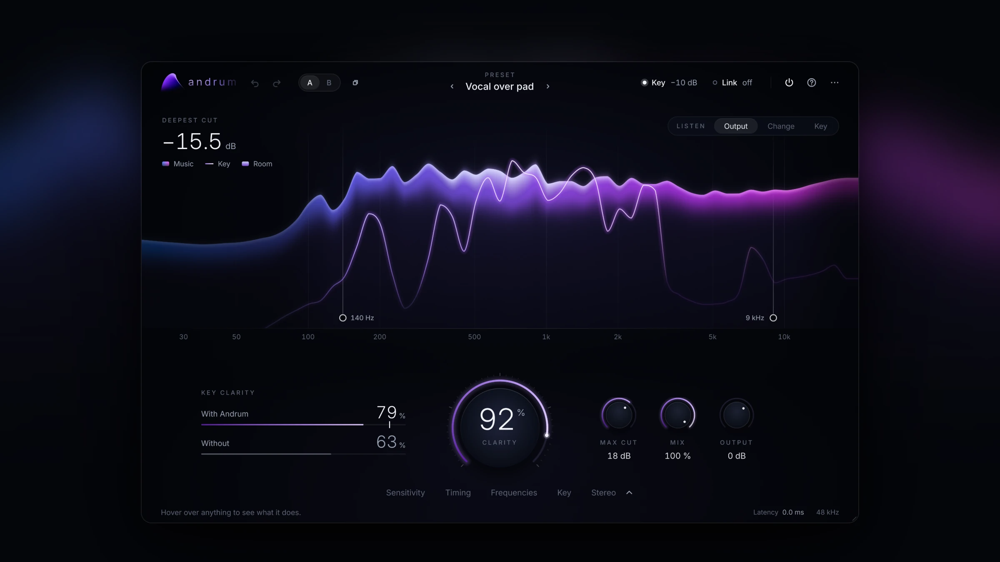
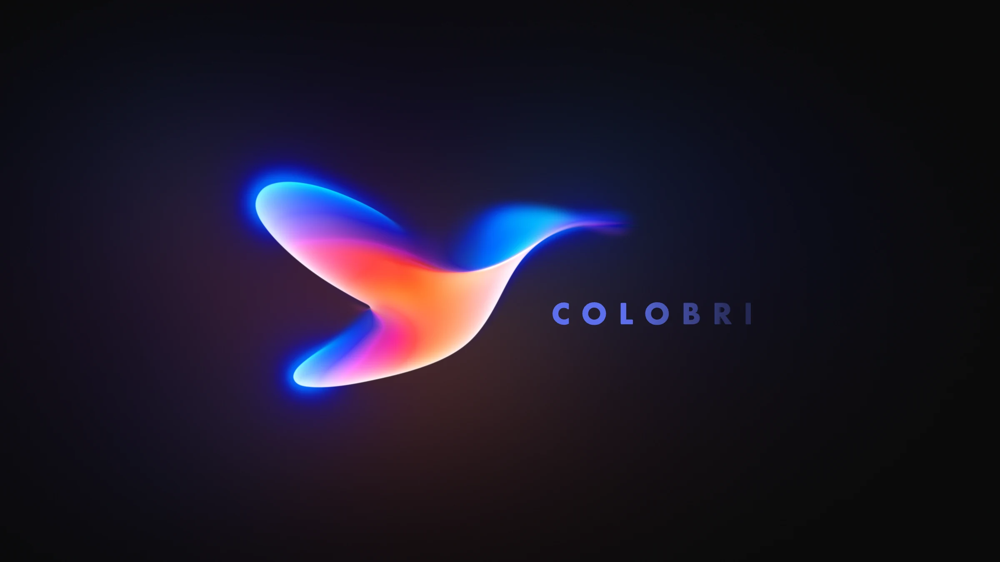
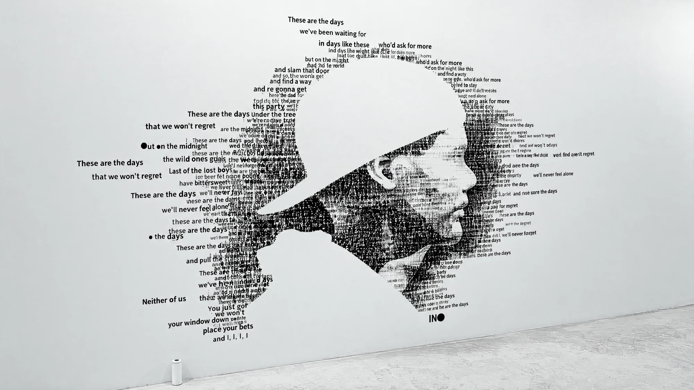
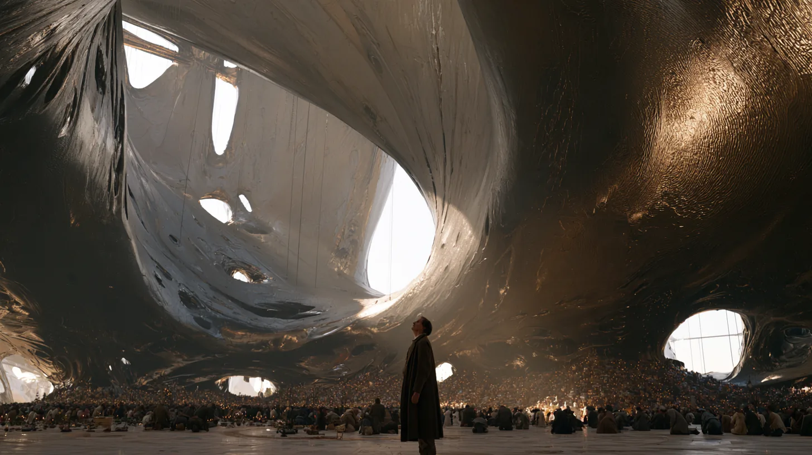

Film, art, music
& new worlds.
Creative director, filmmaker
and artist exploring the space
between imagination and feeling.
Selected work
Film · Art · Sound · Experiences
Nakãya
An original universe
Worldbuilding & art
Andrum
Space for sound.
Audio plugin
Colobri
Color, composed.
Color grading app
Avicii
The Days & beyond
Music videos
The Last Testament
A world beyond our own.
Film
DINOS
Another world, brought to life.
Immersive experienceA little about me
I’m David, a creative director,
filmmaker and artist based in Stockholm.
My practice moves between film, music, technology and immersive experiences. From collaborations with artists and organisations to worlds and creative tools of my own, I’m drawn to work that makes you feel something.